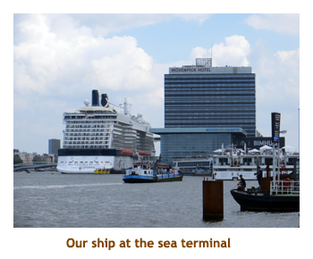
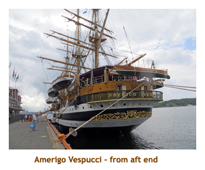
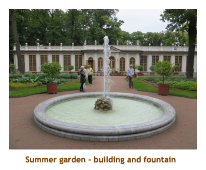
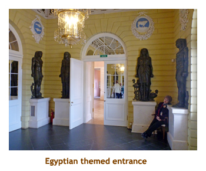
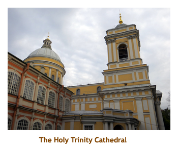

[ Home ] [ Travel ] [ Photography ] [ Pets ] [ Games] [ Rowing] [ Physics ]


Cruising on the Celebrity Silhouette
Travel
Cruises
Past Cruises (Diaries)
Future Cruises
Rogues Galleries
Land Trips
Diaries (Land Trips)
Hawai'i - Big Island - 04'01
Hawai'i - Maui - 05'02
Hawai'i - Big Island - 04'03
Hawai'i - Kaua'i - 09'04
Hawai'i - Big Island - 04'06
Hawai'i - Maui - 04'06
Mainland China - 05'07
Phoenix, Arizona - 12'07
Greek Isles - 05'08
Hawai'i - Kaua'i - 09'08
Hawai'i - Big Island - 09'09
Hawai'i - Maui - 05'12
Hawai'i - Big Island - 04'13
Ireland - 08'13
Mexico - Cancun 11'13
France/Belgium/Lux 07'15
Hawai'i - Big Island - 05'17
England / Wales - 06'17
Hawai'i - Big Island - 09'19
Photography
Cameras
Underwater
Pets
Tara
Blackie
Whitey
Muffy
Ollie
Rusty
Fluffy
Rufus&Dufus
Games
Rowing
Physics
Rating (out of 5): Ship Food Service Itinerary
We had visited the Baltics in 2005 and 2007 on the Connie, so it was time that we revisited the area. Marjorie found a good deal on the Silhouette and the itinerary included Aarhus - a new port for us. The only potential drawback to this cruise was the time of year. Considering that some of the ports are above the 60th parallel (BC / Yukon border), then late August is really the beginning of autumn. As it turned out, we had a mix of warm and cold; and sun, cloud and rain.
The ship was very full. The double occupany capacity is 2,886 and there were 2,915 aboard. There were a few families, but it was mainly an adult crowd. One thing that surprised us was that there were no onboard lecturers. Instead they had a lecture channel on the in-room TV system which showed lectures that were taped from previous cruises. Other than that they had the usual short port talks on navigating the towns and shopping.
Usually when cruising Europe we book tours in each port. This time because we had been to these ports twice before, and partly to keep down costs, we decided to just "walk on our own" in Oslo, Stockholm, Copenhagen and Tallinn. Also, in Helsinki we planned to spend the day with our Finnish friends Henrik and Marjatta. We did book tours for Aarhus (new port to us), St. Petes (only way to get around) and Warnemunde (hadn't toured Warnemunde or Rostock before, always went further afield).
Having cruised for many years now one notices industry trends implemented on the ships. Here are a couple of examples:
- Celebrity is caving to the informal crowd (that's us) to eliminate formal nights. They now have "evening chic" nights that seem just like the normal "smart casual" nights.
- In order to provide the rich (Aqua Class, Suite class) passengers a more consistent experience, there is now a special restaurant for Aqua Class (Blu) and likewise for Suite Class (Luminae) so that they need not rub shoulders with us peons from below.
Lastly, our captain was a very humorous fellow. I will include some of his quotes
throughout the diary.
Pre-cruise (Aug 18, 19) - Travelling to Amsterdam
We arose just after 1:00 and inquired about grocery stores and restaurants.
Pointed in the right direction, we walked for about a mile to a small town
(Hoofddorp, I guess).
The town had a business center with shops, restaurants and a large
mall with a huge grocery store. We did our usual foray for
Coke, crackers and chocolate
bars. On the way back to the hotel we stopped for an early dinner at a sushi
restaurant. It was an "all you can eat" sushi bar, but we were very disappointed
with the quality of the food. We were back at the hotel by 4:30. It was cloudy, but
warm and humid. (It rained heavily later during the night). We watched the Olympics
on TV for as long as we could keep our eyes open. At 9:00 we did the sleeping
pill trick and slept through the night pretty soundly.
Day 1 (Aug 20) - Boarding in Amsterdam
After lunch we popped into our cabin to drop off our carry-on bags. Our main luggage had not arrived to the room yet, so we set off ashore to scope out the dock area. Just a short distance from the ship was a huge train station that had a shopping mall inside. We headed inside the station and discovered a grocery store. We loaded up on Coke and chocolate milk to see us through the first week of the cruise. We arrived back aboard and entered our cabin just as our suitcases appeared. We unpacked our bags and then headed off for the 4:15 muster drill.
Captain's quote: "If we are evacuating the ship then I am responsible
for the evacuation process. If I am incapacitated then the first officer
will be responsible. If both of us are incapacitated, then the second officer
will be responsible. If all three of us are incapacitated, then it's every
man for himself!"

The sail-away was at 5:00 PM. We left the dock pretty much on time and
headed out into the harbour. There was a shallow lock that we had to go
through to get to the main channel. I hadn't noticed it when we were here
on the Prinsendam some years ago. The harbour took us past some rural areas
which were really lovely. Then it was dinner time (6:00 PM). We had booked
"early fixed dining" (select dining was sold out) and a table for 6 or 8.
However we were taken to a table for 4 with no other occupants. Not everyone
makes it to the MDR on the first night so we asked the Maitre'd if anyone
else was assigned to the table and he said no! So,
after eating, we asked to be changed
to another (populated) table for the rest of the cruise. Done! For dinner
I had prime rib which was very good. Afterwards we saw a "mentalist" who
did some mind tricks. He was OK. Then it was time for bed with a sleeping
pill.
Day 2 (Aug 21) - A day at sea
Note: Celebrity has taken the lead in getting rid of formal night.
They have replaced it with "Evening Chic" which really is no different than
regular "Smart Casual". Jackets and ties are suggested, but optional! Some
people still dressed up, but most seemed to wear their regular stuff. About
time!
Day 3 (Aug 22) - A return to Oslo, Norway
|  |
We were back on the ship for lunch in the buffet. After lunch we headed out for the royal palace by way of the radhus (city hall). It rained lightly on our way over, but stopped by the time we reached the city hall. On the big city hall square, they were either setting up or taking down for an outdoor concert. There were some huge caricatures of elephants but I have no idea why. We didn't go inside the city hall (been there done that) so just continued on a couple of blocks to the palace grounds. The Royal Palace was built in the first half of the 19th century as the Norwegian residence of the French-born King Charles III of Norway, who reigned as king of Norway and Sweden. The palace is the official residence of the present Norwegian monarch. The palace has 173 rooms. We walked around the palace gardens, but didn't go inside. At one side of the palace we encountered a group of helmeted soldiers participating in the changing of the guard. We walked back to the ship and were aboard by 3:00. Trivia and sail-away were at 4:00. For dinner I had seafood rissoto. We walked around the decks for a while and then read for a bit. Bedtime.
Day 4 (Aug 23) - First time to Aarhus, Denmark
It was about 11:00 when we arrived at Den Gamel By (the old town museum). It was
a reconstructed medieval village complete with many (75) buildings, streets and even volunteers
in period costume demonstrating everyday life. It was really a wonderful exhibit.
It reminded me of Heritage Park in Calgary.
We did a short lecture about the village and then were given an hour to wander through
the village on our own. Every building seemed to be housing something interesting
with people to demo or explain it all. Our hour only allowed us enough time to wander around the
grounds without entering many of the buildings. The park is really meant for spending the day there!
Our time was up and we were bused back to the ship (by 12:30). We had lunch in the buffet,
read for a while and then I headed to the gym. As we were still in port, the gym was empty. We did
well at afternoon trivia, tying for first. For dinner I had lamb wrapped in Phyllo. It was excellent.
The entertainment was a magician, but we skipped him to walk around the upper decks. We
still were bothered by the time change, so headed off to bed. We were losing an hour too, as we
put the clocks forward an hour tonight.
 |
|||
 |
Day 5 (Aug 24) - A second day at sea
 We woke up today about 7:30 to heavy fog. It was a sea day so that was fine. The
ship's horn was being given a good workout. We had breakfast in the buffet and then
read for a while. The fog cleared away and the sun came out. I went to the gym
and, being a sea day, it was very busy. We did lunch in the buffet. After lunch we took
our books out to the promenade deck and read for a while sitting in the sunshine.
We really missed attending the glass blowing sessions that were on the sister ships
(Solstice, Equinox and Eclipse) by the grassy lawn area. It's now an extra cost BBQ joint.
Trivia was at 4:15. It was an evening chic night again, with the same mix of fashion
choices. For dinner I had chateau briand which was very good. We wandered
around the ship for a while and then headed to bed.
We woke up today about 7:30 to heavy fog. It was a sea day so that was fine. The
ship's horn was being given a good workout. We had breakfast in the buffet and then
read for a while. The fog cleared away and the sun came out. I went to the gym
and, being a sea day, it was very busy. We did lunch in the buffet. After lunch we took
our books out to the promenade deck and read for a while sitting in the sunshine.
We really missed attending the glass blowing sessions that were on the sister ships
(Solstice, Equinox and Eclipse) by the grassy lawn area. It's now an extra cost BBQ joint.
Trivia was at 4:15. It was an evening chic night again, with the same mix of fashion
choices. For dinner I had chateau briand which was very good. We wandered
around the ship for a while and then headed to bed.
Captain's Quote: (Morning report while sailing in the fog.) "It is very
foggy out and I don't have a clue where we are. We are currently doing 18 knots, so we
are going very fast towards someplace we can't see."
Day 6 (Aug 25) - Our favorite, Tallinn, Estonia
Day 7 (Aug 26) - St. Petersburg, day 1
|  |
Our first stop was at the huge Kazan cathedral. modelled after St. Peters in Rome. We had been there before, so didn't take many pictures. Then we walked across the street to the Eliseev food emporium - a famous "deli". Lots of cakes, sweets and caviar. It was fun to browse through it. The store was done in an art deco style. Then we bused a short distance to the Summer Garden. We were expecting a flower garden, but it was really a huge green space - mostly filled with high hedges and trees. At the intersection of many of the criss-crossing paths were wonderful fountains. We walked from one end of the garden to the other (about 3 city blocks) and then back again. It would be a lovely cool place on one of those rare St. Petes hot days. At one point we encountered a wedding group with bright umbrellas. Our last stop for the morning was at a Georgian restaurant. The menu was pre-planned. The soup course and main course were similar (and spicy). The best part was the nan bread with melted cheese, and the ice cream for dessert.
|  |
After lunch we reboarded the van and did the hour drive our to Pavlovsk. We stopped briefly at Tsarskoe Selo (Catherine's Palace) to pick up our Pavlovsk tickets. The palace was built by Catherine the Great starting in 1780. It is much smaller than Catherine's Palace and Peterhof. We walked through the rooms of the palace while the guide provided the history. It was very interesting. With the huge lineups and waiting times at nearby Catherine's Palace, this is a much quieter alternative although not as sumptuous. We then did the hour long return trip to our final stop - the Alexander Nevsky monestary. This is a beautiful orthodox church (called the Holy Trinity Cathedral) containing the remains of Nevsky. Right next door is the Tikhvin cemetery where the famous russian composers are buried (saw them last time). Finally we drove back to the ship, stopping at the tour office to pay for our outing. At the dock we had to go through Russian customs again. Another smiley agent! We were on the ship by 7:00 and headed up to the buffet for dinner. Afterwards we settled in the theatre for a russian folkloric show by the "St. Petersburg Super Stars". The singing and dancing was wonderful. A great way to end the day!
|  |
Day 8 (Aug 27) - St. Petersburg, day 2
 |
After the canal cruise, we drove to the Peter and Paul island fortress. Our destination was the SS Peter and Paul cathedral where most of the tsars since Peter the Great are buried. Once again we had been here before, but it was worth a revisit. Inside the beautiful cathedral were the tombs of many Romanov dynasty tsars, including the family of tsar Nicholas II - the last tsar. Then it was back to the ship, arriving about 12:00 noon. We had lunch in the buffet and then relaxed for the afternoon. At trivia there was a very small turnout. I joined another team of 2 and we came second. Not bad! For dinner I had roast turkey. We were supposed to sail from St Petes about 6:00 PM, but there was an anouncement during dinner that due to forecast high winds, we would not be able to leave the dock safely until 9:00 the next morning. So, Helsinki was cancelled. We had Henrik and Marjatta awaiting to pick us up so had to message via facebook that we wouldn't be coming. It was very disappointing not to be seeing our good friends! So, we were overnighting in St. Petes.
Day 9 (Aug 28) - Helsinki becomes sea day
Captain's Quote: (Comparing the safety of our earlier foggy day to
last night's windy weather.) "Sailing in the fog is called 'blind navigation' and, with
radar, is smart navigation by a good captain. Sailing in a high wind is called stupid
navigation and with a different captain."
Day 10 (Aug 29) - A rainy day in Stockholm
The military band played some march music and then switched to a medly of popular songs. I soon realized there was a theme - "Raindrops Keep falling on my Head", "Singing in the Rain", "Rainy Days and Mondays" (and it was Monday!), etc. We enjoyed walking through Gamla Stan again, even though it was a long walk to get there. We visited the Storkyrkan (Stockholm's 700 year old cathedral) and the Tyska Kyrkan (German church). Both were beautiful cathedrals. We finished our walk through the old town and did the 2 miles back to the ship. There was a lot of roadwork going on along the way as we had noticed in so many of our other ports. It rained a bit on the way back. We arrived at the ship about 1:30, in time for a late lunch in the buffet. We read for a while and then headed to 4:00 trivia. Once again there weren't many people there. For dinner I had beef brochettes. They were very good. We skipped the entertainment and headed to bed.
Day 11 (Aug 30) - A fourth day at sea
Captain's Quote: "The captain and his officers have to wear slip-proof
shoes so that during an evacuation they do not slip on the deck and tumble
into a lifeboat full of the ship's officers!" (With apologies to one Captain
Francesco Schettino).
Day 12 (Aug 31) - A sunny day in Warnemunde
We reboarded the bus and drove through more countryside to the major port city of Rostock. Rostock used to be an industrial town, mainly to do with ship building. Now it is less industrial and certainly more dependent on the tourist trade. We did a tour past the major sights and then stopped at the "New Market" square for a walk about. We first visited the Marienkirche cathedral, built in 1230 AD. Another great church! Then we crossed the street to the town square. Finally we were given some time to wander around the old town and check out the architecture and fountains. Then it was time to drive about 30 minutes back to Warnemunde and the ship. We got to the ship about 12:30. We had a quick lunch at the buffet and then headed off to explore Warnemunde wich was literally across the street from the ship. We first walked south to the new commercial area and found a Rewe grocery store. We loaded up on Coke, beer, wine, tucs crackers and chocolate bars which we carried back to the ship.
It was only 2:00 so Marjorie headed off the ship again to explore the northen end of Warnemunde where the old town was. It was really hot out by this time so I stayed on the ship. I sat on our balcony watching the huge variety of ships going into and out of Rostock harbour. Most of the larger ships were car ferries (of various lines). While Marjorie explored Warnemunde, I attended 4:00 trivia where I teamed up with another couple. The ship and trivia were nearly empty! It was a very difficult trivia and we scored 5 out of 20. We were surprised to tie for the win! Marjorie returned from her escapades and we got ready for dinner. Because most passengers were still on their way back from Berlin (including our regular dinner mates), we decided to do the special German extravaganza in the buffet. There was quite an array of German food and we were serenaded by two organ grinders and accordian. Very German!! After dinner we hung on the promenade deck watching the swarm of passengers debarking the train and queing up to reboard the ship. Hope they all had a good tour.
Day 13 (Sep 1) - Copenhagen, our final port
 |
Right next door to the King's Garden was Rosenborg Castle. We had been to the site of the castle on an earlier trip but we had to hurry because it was late in the day. This time we had all day! The castle was built by Christian IV in the early 1600's. By the 1700's it was no longer a residence but rather the storage (and display) place for the king's treasures. We debated doing a guided tour of the castle, but in the end decided not to go inside the castle and just walked around the grounds instead. In the neighbouring military academy grounds a military band was doing its thing, marching in the sunshine. We watched them until they disappeared from view. Then we wandered through the gardens some more. From the castle we walked several blocks to a pedestrian mall looking for the Copenhagen porcelain museum. We found the museum and wandered through the main floor area. Lots of interesting china patterns! We found a bench on the mall and sat there and had our Coke and muffins from our backpack.
 |
Continuing our walk, we passed by Christianborg Castle (now the parliament building) and the old stock exchange building. Finally we turned down a main street and surprisingly ended up at the shuttle bus. We had done a large loop and had just returned to our starting point. We were back to the ship by 1:00. We had lunch in the buffet. It was such a nice afternoon that we headed off the ship again and walked to the "little mermaid" statue not far from the ship. There were loads of tourists there. Then we walked back via the Geflon fountain, St. Alban's church and the Kastellet fortress. We were aboard again and in time for 4:00 trivia. For dinner I had red snapper. We walked the decks for a while and then turned in.
Captain's Quote: As we were leaving the dock, "We're all aboard
and ready to leave as soon as I find the keys to the ship."
Day 14 (Sep 2) - A fifth day at sea
Captain's Quote: "Thanks to our GPS we know our latitude and longitude. But none of us know
what that means!"
Day 15 (Sep 3) - Amsterdam and Home
 We were up early just after 6:30 and had breakfast with the mobs in the buffet. We had a
"get off the boat" time of 8:30. We lounged in our room until the 8:00 check-out time and then
went to the gangway area to wait for departure. When we left the ship and entered the terminal
building there was no luggage zoo! Our bags were being delivered to the airport by a separate
truck. So, we boarded the shuttle bus and headed off to the airport. We were at Schiphol about
9:00 and were let off near an entrance, where they were unloading our bags. The bags came in
several trucks. Even though we were in the second earliest bus (of several), our bags came
on the last truck! So, all this procedural change had done was move the luggage zoo from the
cruise terminal to the airport! It was 10:00 by the time we had our bags. We went directly to KLM
check-in and joined a huge line there. Then it was another slow moving line through security
where they seemed to be hand checking half the bags. Finally it was another lineup through
EU exit customs. By now it was 12:30 - 2.5 hours to get through the lineups!! We found a
restaurant for some lunch. Our flight was at 3:30 so we didn't have long to wait until boarding time.
Once aboard, we sat for a long time and then the captain announced that someone hadn't shown
up to board so they had to find his luggage and unload it. So, we were 1 hour late taking off on
our 8.5 hour direct flight to Calgary. We landed in Calgary around 5:30 and Ian & Shirley
were there to pick us up. They must think of us as the "late" John & Marjorie. We
were home soon after and the kitties were all well and happy to see us. Another great
cruise.
We were up early just after 6:30 and had breakfast with the mobs in the buffet. We had a
"get off the boat" time of 8:30. We lounged in our room until the 8:00 check-out time and then
went to the gangway area to wait for departure. When we left the ship and entered the terminal
building there was no luggage zoo! Our bags were being delivered to the airport by a separate
truck. So, we boarded the shuttle bus and headed off to the airport. We were at Schiphol about
9:00 and were let off near an entrance, where they were unloading our bags. The bags came in
several trucks. Even though we were in the second earliest bus (of several), our bags came
on the last truck! So, all this procedural change had done was move the luggage zoo from the
cruise terminal to the airport! It was 10:00 by the time we had our bags. We went directly to KLM
check-in and joined a huge line there. Then it was another slow moving line through security
where they seemed to be hand checking half the bags. Finally it was another lineup through
EU exit customs. By now it was 12:30 - 2.5 hours to get through the lineups!! We found a
restaurant for some lunch. Our flight was at 3:30 so we didn't have long to wait until boarding time.
Once aboard, we sat for a long time and then the captain announced that someone hadn't shown
up to board so they had to find his luggage and unload it. So, we were 1 hour late taking off on
our 8.5 hour direct flight to Calgary. We landed in Calgary around 5:30 and Ian & Shirley
were there to pick us up. They must think of us as the "late" John & Marjorie. We
were home soon after and the kitties were all well and happy to see us. Another great
cruise.